2025 Advanced Higher Biology marking instructions
Source: Scottish Qualifications Authority (SQA) / Qualifications Scotland. This is a StemInteract HTML companion, not an official HTML edition. Selectable text is supplied alongside original page images. Use the images or original PDF for equations, powers, fractions, vector notation, tables and diagrams; text extraction cannot fully preserve mathematical layout.
Jump to a question
PDF page 1
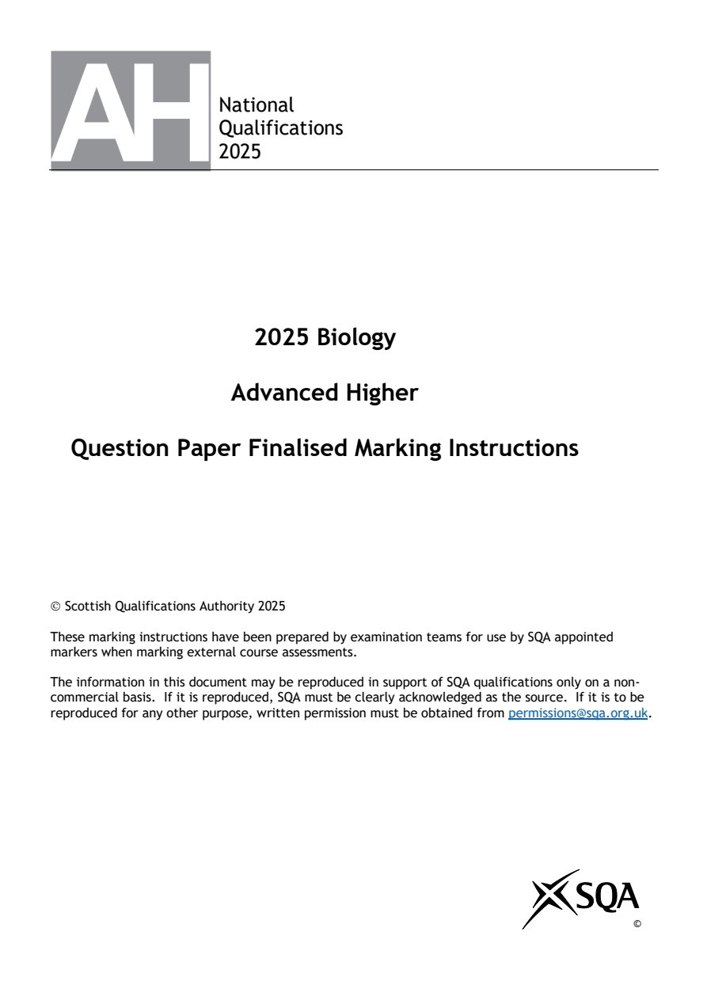
Selectable page text
National
Qualifications
2025
2025 Biology
Advanced Higher
Question Paper Finalised Marking Instructions
© Scottish Qualifications Authority 2025
These marking instructions have been prepared by examination teams for use by SQA appointed
markers when marking external course assessments.
The information in this document may be reproduced in support of SQA qualifications only on a non-
commercial basis. If it is reproduced, SQA must be clearly acknowledged as the source. If it is to be
reproduced for any other purpose, written permission must be obtained from permissions@sqa.org.uk.
©PDF page 2
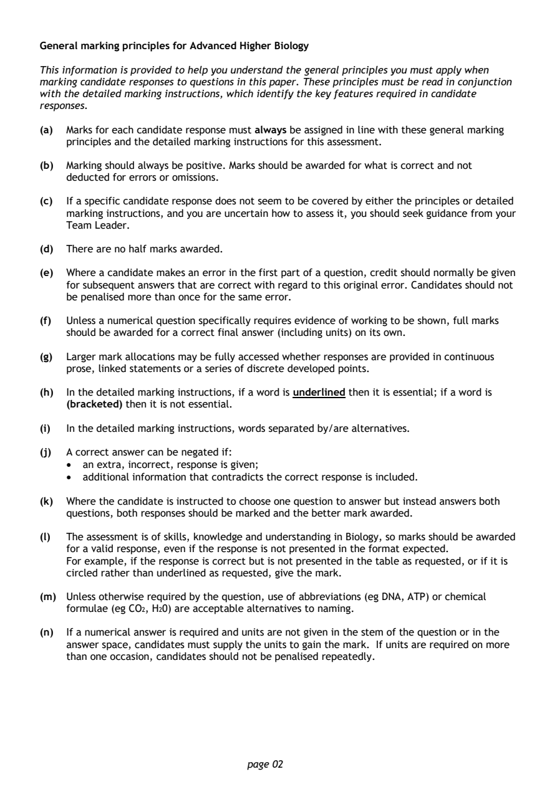
Selectable page text
General marking principles for Advanced Higher Biology
This information is provided to help you understand the general principles you must apply when
marking candidate responses to questions in this paper. These principles must be read in conjunction
with the detailed marking instructions, which identify the key features required in candidate
responses.
(a) Marks for each candidate response must always be assigned in line with these general marking
principles and the detailed marking instructions for this assessment.
(b) Marking should always be positive. Marks should be awarded for what is correct and not
deducted for errors or omissions.
(c) If a specific candidate response does not seem to be covered by either the principles or detailed
marking instructions, and you are uncertain how to assess it, you should seek guidance from your
Team Leader.
(d) There are no half marks awarded.
(e) Where a candidate makes an error in the first part of a question, credit should normally be given
for subsequent answers that are correct with regard to this original error. Candidates should not
be penalised more than once for the same error.
(f) Unless a numerical question specifically requires evidence of working to be shown, full marks
should be awarded for a correct final answer (including units) on its own.
(g) Larger mark allocations may be fully accessed whether responses are provided in continuous
prose, linked statements or a series of discrete developed points.
(h) In the detailed marking instructions, if a word is underlined then it is essential; if a word is
(bracketed) then it is not essential.
(i) In the detailed marking instructions, words separated by/are alternatives.
(j) A correct answer can be negated if:
• an extra, incorrect, response is given;
• additional information that contradicts the correct response is included.
(k) Where the candidate is instructed to choose one question to answer but instead answers both
questions, both responses should be marked and the better mark awarded.
(l) The assessment is of skills, knowledge and understanding in Biology, so marks should be awarded
for a valid response, even if the response is not presented in the format expected.
For example, if the response is correct but is not presented in the table as requested, or if it is
circled rather than underlined as requested, give the mark.
(m) Unless otherwise required by the question, use of abbreviations (eg DNA, ATP) or chemical
formulae (eg CO , H 0) are acceptable alternatives to naming.
2 2
(n) If a numerical answer is required and units are not given in the stem of the question or in the
answer space, candidates must supply the units to gain the mark. If units are required on more
than one occasion, candidates should not be penalised repeatedly.
page 02PDF page 3
Paper 1, Question 1Paper 1, Question 2Paper 1, Question 3Paper 1, Question 4Paper 1, Question 5Paper 1, Question 6Paper 1, Question 7Paper 1, Question 8Paper 1, Question 9Paper 1, Question 10Paper 1, Question 11Paper 1, Question 12Paper 1, Question 13Paper 1, Question 14Paper 1, Question 15Paper 1, Question 16Paper 1, Question 17Paper 1, Question 18Paper 1, Question 19Paper 1, Question 20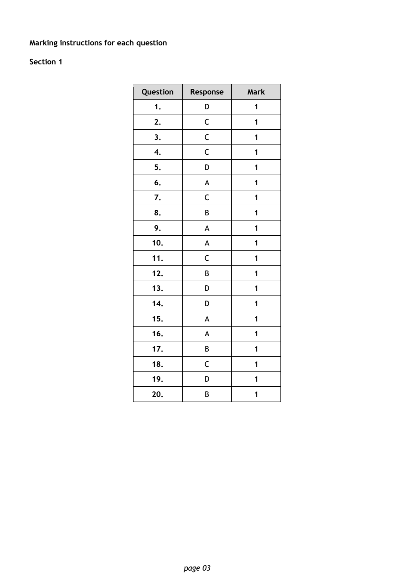
Selectable page text
Marking instructions for each question
Section 1
Question Response Mark
1. D 1
2. C 1
3. C 1
4. C 1
5. D 1
6. A 1
7. C 1
8. B 1
9. A 1
10. A 1
11. C 1
12. B 1
13. D 1
14. D 1
15. A 1
16. A 1
17. B 1
18. C 1
19. D 1
20. B 1
page 03PDF page 4
Paper 2, Question 1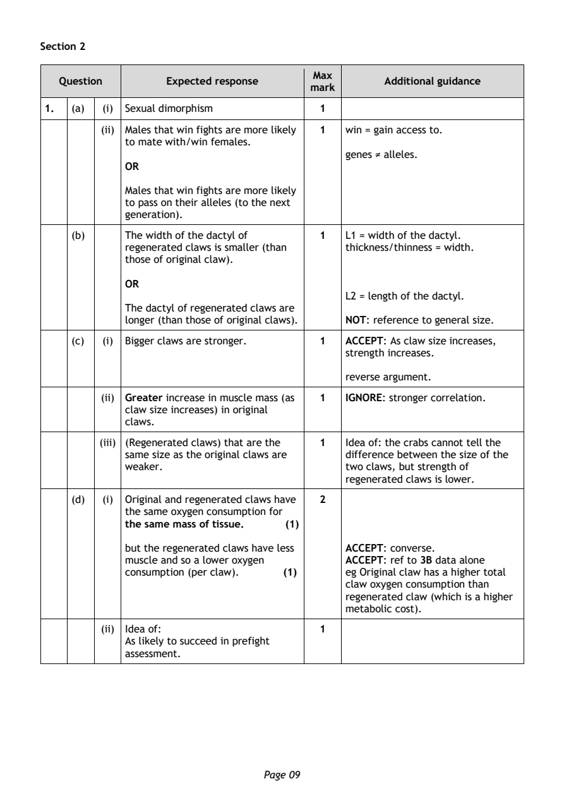
Selectable page text
Section 2
Max
Question Expected response Additional guidance
mark
1. (a) (i) Sexual dimorphism 1
(ii) Males that win fights are more likely 1 win = gain access to.
to mate with/win females.
genes ≠ alleles.
OR
Males that win fights are more likely
to pass on their alleles (to the next
generation).
(b) The width of the dactyl of 1 L1 = width of the dactyl.
regenerated claws is smaller (than thickness/thinness = width.
those of original claw).
OR
L2 = length of the dactyl.
The dactyl of regenerated claws are
longer (than those of original claws). NOT: reference to general size.
(c) (i) Bigger claws are stronger. 1 ACCEPT: As claw size increases,
strength increases.
reverse argument.
(ii) Greater increase in muscle mass (as 1 IGNORE: stronger correlation.
claw size increases) in original
claws.
(iii) (Regenerated claws) that are the 1 Idea of: the crabs cannot tell the
same size as the original claws are difference between the size of the
weaker. two claws, but strength of
regenerated claws is lower.
(d) (i) Original and regenerated claws have 2
the same oxygen consumption for
the same mass of tissue. (1)
but the regenerated claws have less ACCEPT: converse.
muscle and so a lower oxygen ACCEPT: ref to 3B data alone
consumption (per claw). (1) eg Original claw has a higher total
claw oxygen consumption than
regenerated claw (which is a higher
metabolic cost).
(ii) Idea of: 1
As likely to succeed in prefight
assessment.
Page 09PDF page 5
Paper 2, Question 2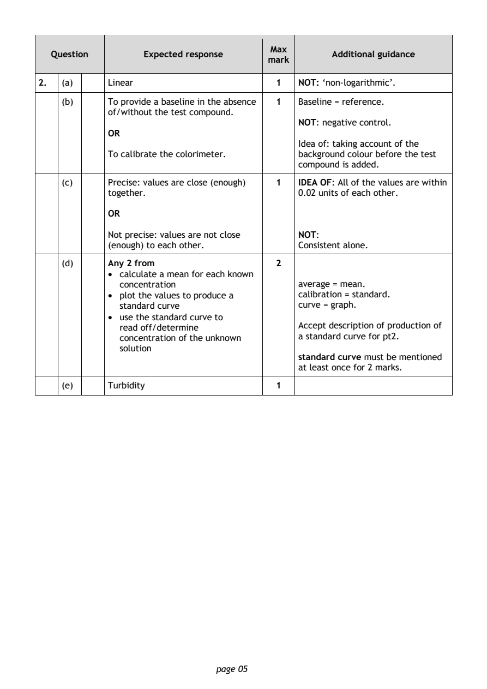
Selectable page text
Max
Question Expected response Additional guidance
mark
2. (a) Linear 1 NOT: ‘non-logarithmic’.
(b) To provide a baseline in the absence 1 Baseline = reference.
of/without the test compound.
NOT: negative control.
OR
Idea of: taking account of the
To calibrate the colorimeter. background colour before the test
compound is added.
(c) Precise: values are close (enough) 1 IDEA OF: All of the values are within
together. 0.02 units of each other.
OR
Not precise: values are not close NOT:
(enough) to each other. Consistent alone.
(d) Any 2 from 2
• calculate a mean for each known
concentration average = mean.
• plot the values to produce a calibration = standard.
standard curve curve = graph.
• use the standard curve to
read off/determine Accept description of production of
concentration of the unknown a standard curve for pt2.
solution
standard curve must be mentioned
at least once for 2 marks.
(e) Turbidity 1
page 05PDF page 6
Paper 2, Question 3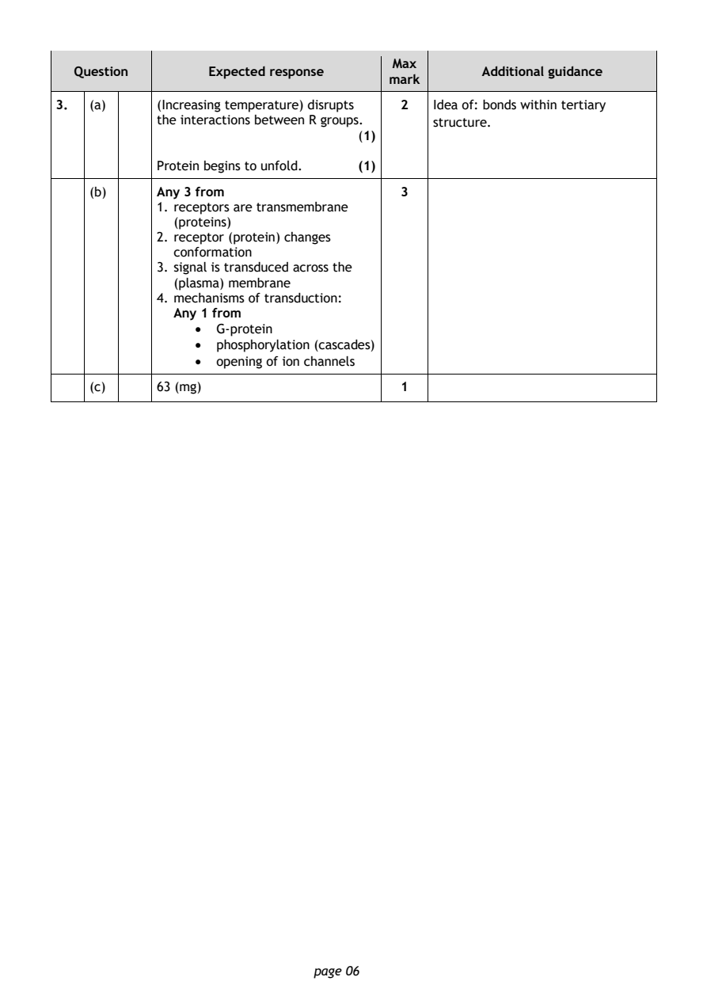
Selectable page text
Max
Question Expected response Additional guidance
mark
3. (a) (Increasing temperature) disrupts 2 Idea of: bonds within tertiary
the interactions between R groups. structure.
(1)
Protein begins to unfold. (1)
(b) Any 3 from 3
1. receptors are transmembrane
(proteins)
2. receptor (protein) changes
conformation
3. signal is transduced across the
(plasma) membrane
4. mechanisms of transduction:
Any 1 from
• G-protein
• phosphorylation (cascades)
• opening of ion channels
(c) 63 (mg) 1
page 06PDF page 7
Paper 2, Question 4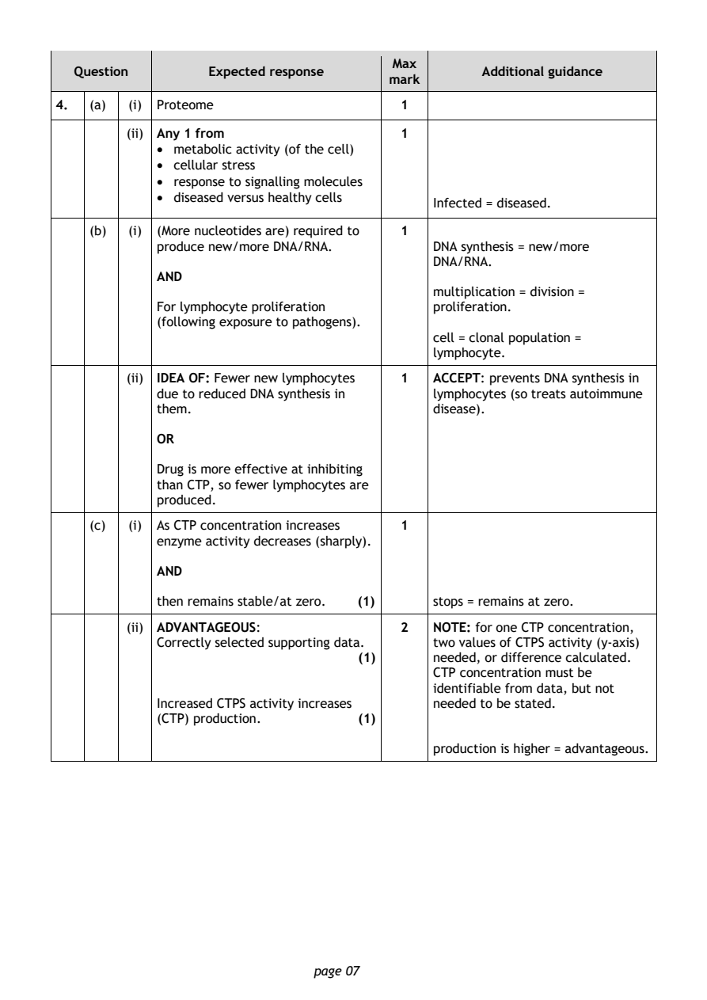
Selectable page text
Max
Question Expected response Additional guidance
mark
4. (a) (i) Proteome 1
(ii) Any 1 from 1
• metabolic activity (of the cell)
• cellular stress
• response to signalling molecules
• diseased versus healthy cells
Infected = diseased.
(b) (i) (More nucleotides are) required to 1
produce new/more DNA/RNA. DNA synthesis = new/more
DNA/RNA.
AND
multiplication = division =
For lymphocyte proliferation proliferation.
(following exposure to pathogens).
cell = clonal population =
lymphocyte.
(ii) IDEA OF: Fewer new lymphocytes 1 ACCEPT: prevents DNA synthesis in
due to reduced DNA synthesis in lymphocytes (so treats autoimmune
them. disease).
OR
Drug is more effective at inhibiting
than CTP, so fewer lymphocytes are
produced.
(c) (i) As CTP concentration increases 1
enzyme activity decreases (sharply).
AND
then remains stable/at zero. (1) stops = remains at zero.
(ii) ADVANTAGEOUS: 2 NOTE: for one CTP concentration,
Correctly selected supporting data. two values of CTPS activity (y-axis)
(1) needed, or difference calculated.
CTP concentration must be
identifiable from data, but not
Increased CTPS activity increases needed to be stated.
(CTP) production. (1)
production is higher = advantageous.
page 07PDF page 8
Paper 2, Question 5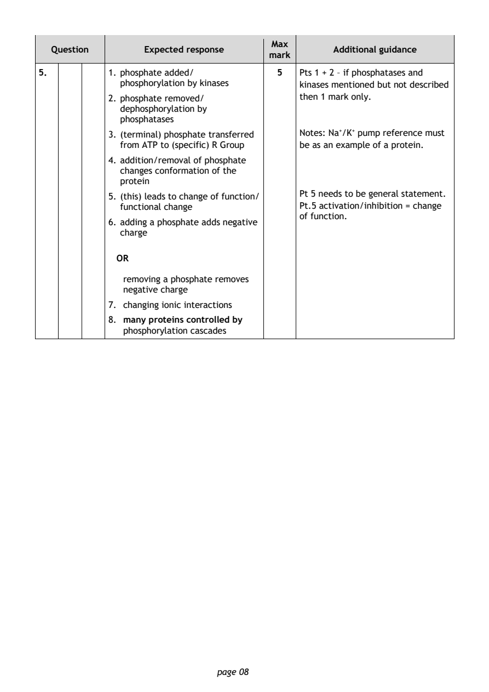
Selectable page text
Max
Question Expected response Additional guidance
mark
5. 1. phosphate added/ 5 Pts 1 + 2 – if phosphatases and
phosphorylation by kinases kinases mentioned but not described
2. phosphate removed/ then 1 mark only.
dephosphorylation by
phosphatases
3. (terminal) phosphate transferred Notes: Na⁺/K⁺ pump reference must
from ATP to (specific) R Group be as an example of a protein.
4. addition/removal of phosphate
changes conformation of the
protein
Pt 5 needs to be general statement.
5. (this) leads to change of function/
functional change Pt.5 activation/inhibition = change
of function.
6. adding a phosphate adds negative
charge
OR
removing a phosphate removes
negative charge
7. changing ionic interactions
8. many proteins controlled by
phosphorylation cascades
page 08PDF page 9
Paper 2, Question 6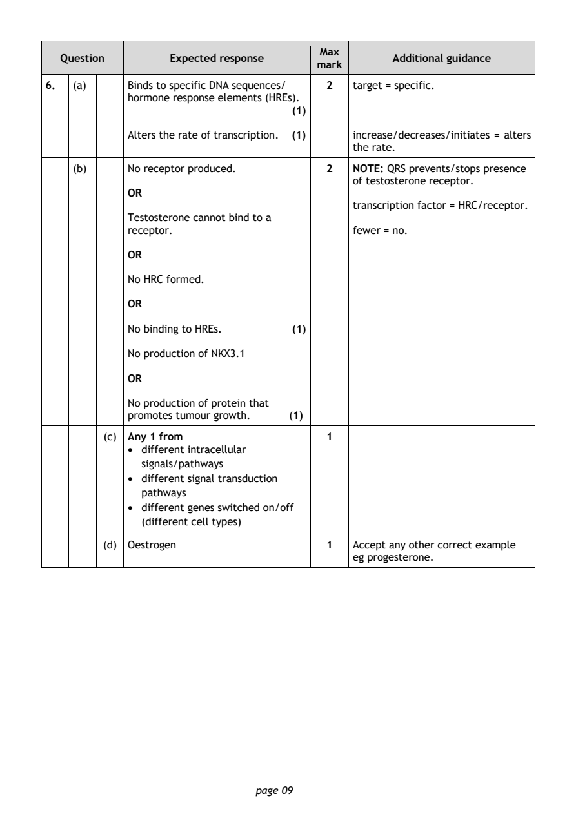
Selectable page text
Max
Question Expected response Additional guidance
mark
6. (a) Binds to specific DNA sequences/ 2 target = specific.
hormone response elements (HREs).
(1)
Alters the rate of transcription. (1) increase/decreases/initiates = alters
the rate.
(b) No receptor produced. 2 NOTE: QRS prevents/stops presence
of testosterone receptor.
OR
transcription factor = HRC/receptor.
Testosterone cannot bind to a
receptor. fewer = no.
OR
No HRC formed.
OR
No binding to HREs. (1)
No production of NKX3.1
OR
No production of protein that
promotes tumour growth. (1)
(c) Any 1 from 1
• different intracellular
signals/pathways
• different signal transduction
pathways
• different genes switched on/off
(different cell types)
(d) Oestrogen 1 Accept any other correct example
eg progesterone.
page 09PDF page 10
Paper 2, Question 7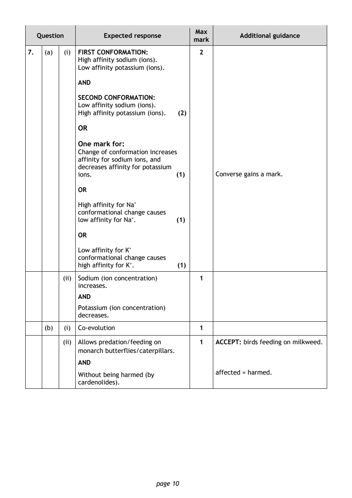
Selectable page text
Max
Question Expected response Additional guidance
mark
7. (a) (i) FIRST CONFORMATION: 2
High affinity sodium (ions).
Low affinity potassium (ions).
AND
SECOND CONFORMATION:
Low affinity sodium (ions).
High affinity potassium (ions). (2)
OR
One mark for:
Change of conformation increases
affinity for sodium ions, and
decreases affinity for potassium
ions. (1) Converse gains a mark.
OR
High affinity for Na⁺
conformational change causes
low affinity for Na⁺. (1)
OR
Low affinity for K⁺
conformational change causes
high affinity for K⁺. (1)
(ii) Sodium (ion concentration) 1
increases.
AND
Potassium (ion concentration)
decreases.
(b) (i) Co-evolution 1
(ii) Allows predation/feeding on 1 ACCEPT: birds feeding on milkweed.
monarch butterflies/caterpillars.
AND
affected = harmed.
Without being harmed (by
cardenolides).
page 10PDF page 11
Paper 2, Question 8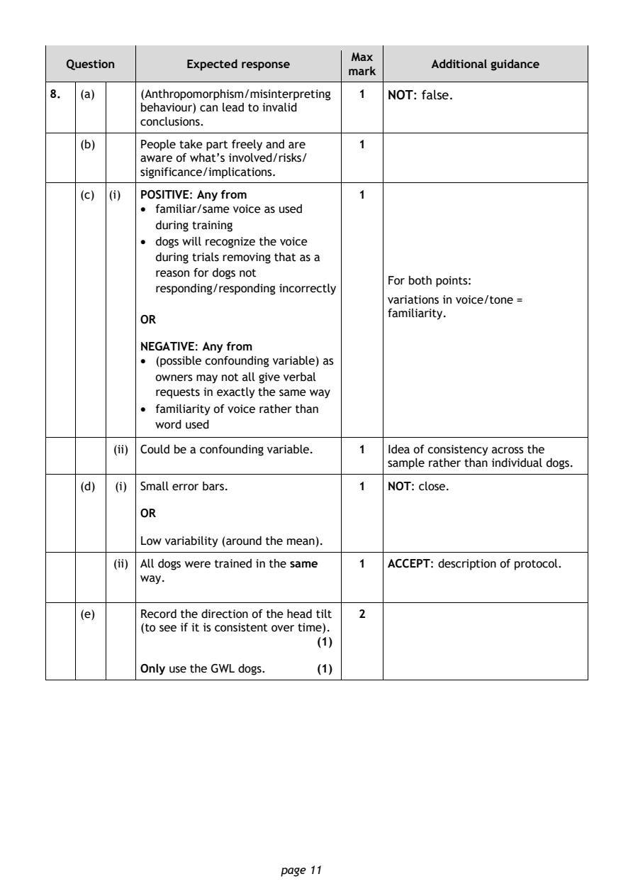
Selectable page text
Max
Question Expected response Additional guidance
mark
8. (a) (Anthropomorphism/misinterpreting 1 NOT: false.
behaviour) can lead to invalid
conclusions.
(b) People take part freely and are 1
aware of what’s involved/risks/
significance/implications.
(c) (i) POSITIVE: Any from 1
• familiar/same voice as used
during training
• dogs will recognize the voice
during trials removing that as a
reason for dogs not
For both points:
responding/responding incorrectly
variations in voice/tone =
familiarity.
OR
NEGATIVE: Any from
• (possible confounding variable) as
owners may not all give verbal
requests in exactly the same way
• familiarity of voice rather than
word used
(ii) Could be a confounding variable. 1 Idea of consistency across the
sample rather than individual dogs.
(d) (i) Small error bars. 1 NOT: close.
OR
Low variability (around the mean).
(ii) All dogs were trained in the same 1 ACCEPT: description of protocol.
way.
(e) Record the direction of the head tilt 2
(to see if it is consistent over time).
(1)
Only use the GWL dogs. (1)
page 11PDF page 12
Paper 2, Question 9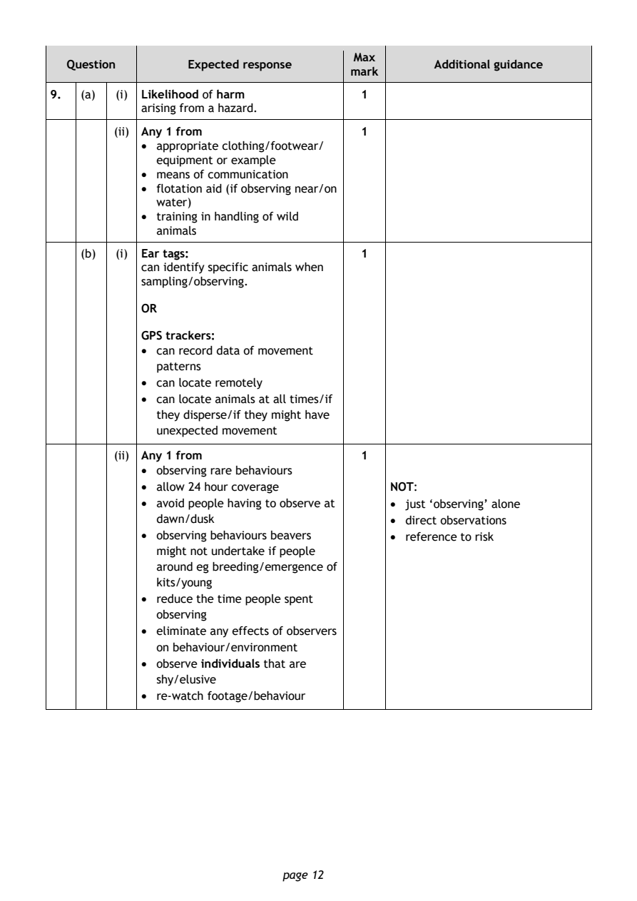
Selectable page text
Max
Question Expected response Additional guidance
mark
9. (a) (i) Likelihood of harm 1
arising from a hazard.
(ii) Any 1 from 1
• appropriate clothing/footwear/
equipment or example
• means of communication
• flotation aid (if observing near/on
water)
• training in handling of wild
animals
(b) (i) Ear tags: 1
can identify specific animals when
sampling/observing.
OR
GPS trackers:
• can record data of movement
patterns
• can locate remotely
• can locate animals at all times/if
they disperse/if they might have
unexpected movement
(ii) Any 1 from 1
• observing rare behaviours
• allow 24 hour coverage NOT:
• avoid people having to observe at • just ‘observing’ alone
dawn/dusk • direct observations
• observing behaviours beavers • reference to risk
might not undertake if people
around eg breeding/emergence of
kits/young
• reduce the time people spent
observing
• eliminate any effects of observers
on behaviour/environment
• observe individuals that are
shy/elusive
• re-watch footage/behaviour
page 12PDF page 13
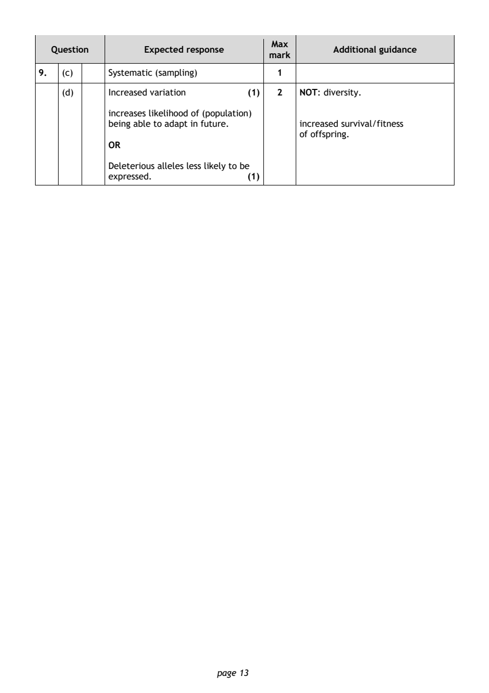
Selectable page text
Max
Question Expected response Additional guidance
mark
9. (c) Systematic (sampling) 1
(d) Increased variation (1) 2 NOT: diversity.
increases likelihood of (population)
being able to adapt in future. increased survival/fitness
of offspring.
OR
Deleterious alleles less likely to be
expressed. (1)
page 13PDF page 14
Paper 2, Question 10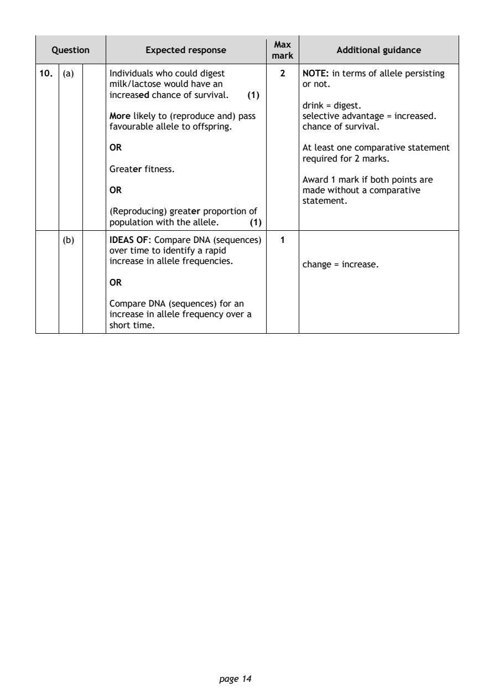
Selectable page text
Max
Question Expected response Additional guidance
mark
10. (a) Individuals who could digest 2 NOTE: in terms of allele persisting
milk/lactose would have an or not.
increased chance of survival. (1)
drink = digest.
More likely to (reproduce and) pass selective advantage = increased.
favourable allele to offspring. chance of survival.
OR At least one comparative statement
required for 2 marks.
Greater fitness.
Award 1 mark if both points are
OR made without a comparative
statement.
(Reproducing) greater proportion of
population with the allele. (1)
(b) IDEAS OF: Compare DNA (sequences) 1
over time to identify a rapid
increase in allele frequencies.
change = increase.
OR
Compare DNA (sequences) for an
increase in allele frequency over a
short time.
page 14PDF page 15
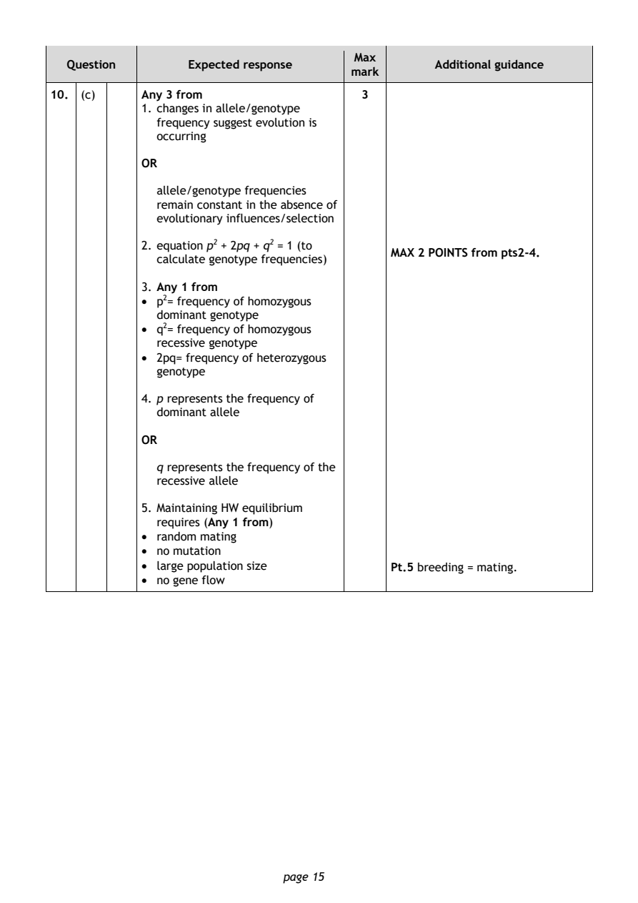
Selectable page text
Max
Question Expected response Additional guidance
mark
10. (c) Any 3 from 3
1. changes in allele/genotype
frequency suggest evolution is
occurring
OR
allele/genotype frequencies
remain constant in the absence of
evolutionary influences/selection
2. equation p² + 2pq + q² = 1 (to
MAX 2 POINTS from pts2-4.
calculate genotype frequencies)
3. Any 1 from
• p²= frequency of homozygous
dominant genotype
• q²= frequency of homozygous
recessive genotype
• 2pq= frequency of heterozygous
genotype
4. p represents the frequency of
dominant allele
OR
q represents the frequency of the
recessive allele
5. Maintaining HW equilibrium
requires (Any 1 from)
• random mating
• no mutation
• large population size Pt.5 breeding = mating.
• no gene flow
page 15PDF page 16
Paper 2, Question 11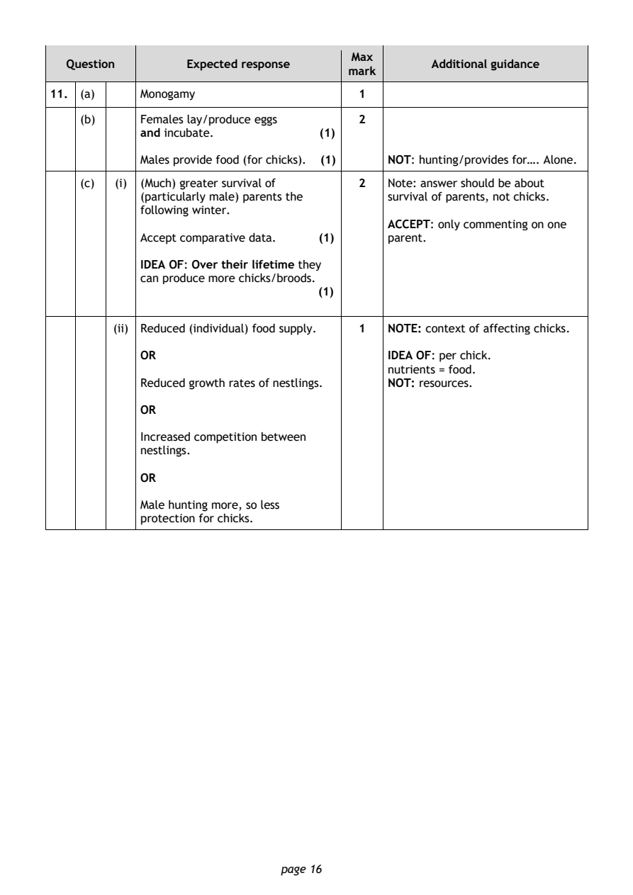
Selectable page text
Max
Question Expected response Additional guidance
mark
11. (a) Monogamy 1
(b) Females lay/produce eggs 2
and incubate. (1)
Males provide food (for chicks). (1) NOT: hunting/provides for…. Alone.
(c) (i) (Much) greater survival of 2 Note: answer should be about
(particularly male) parents the survival of parents, not chicks.
following winter.
ACCEPT: only commenting on one
Accept comparative data. (1) parent.
IDEA OF: Over their lifetime they
can produce more chicks/broods.
(1)
(ii) Reduced (individual) food supply. 1 NOTE: context of affecting chicks.
OR IDEA OF: per chick.
nutrients = food.
Reduced growth rates of nestlings. NOT: resources.
OR
Increased competition between
nestlings.
OR
Male hunting more, so less
protection for chicks.
page 16PDF page 17
Paper 2, Question 12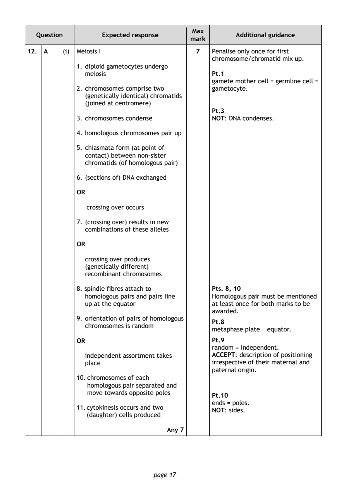
Selectable page text
Max
Question Expected response Additional guidance
mark
12. A (i) Meiosis I 7 Penalise only once for first
chromosome/chromatid mix up.
1. diploid gametocytes undergo
meiosis Pt.1
gamete mother cell = germline cell =
2. chromosomes comprise two gametocyte.
(genetically identical) chromatids
(joined at centromere)
Pt.3
3. chromosomes condense NOT: DNA condenses.
4. homologous chromosomes pair up
5. chiasmata form (at point of
contact) between non-sister
chromatids (of homologous pair)
6. (sections of) DNA exchanged
OR
crossing over occurs
7. (crossing over) results in new
combinations of these alleles
OR
crossing over produces
(genetically different)
recombinant chromosomes
8. spindle fibres attach to Pts. 8, 10
homologous pairs and pairs line Homologous pair must be mentioned
up at the equator at least once for both marks to be
awarded.
9. orientation of pairs of homologous
Pt.8
chromosomes is random
metaphase plate = equator.
OR Pt.9
random = independent.
independent assortment takes ACCEPT: description of positioning
place irrespective of their maternal and
paternal origin.
10. chromosomes of each
homologous pair separated and
move towards opposite poles
Pt.10
ends = poles.
11. cytokinesis occurs and two
NOT: sides.
(daughter) cells produced
Any 7
page 17PDF page 18
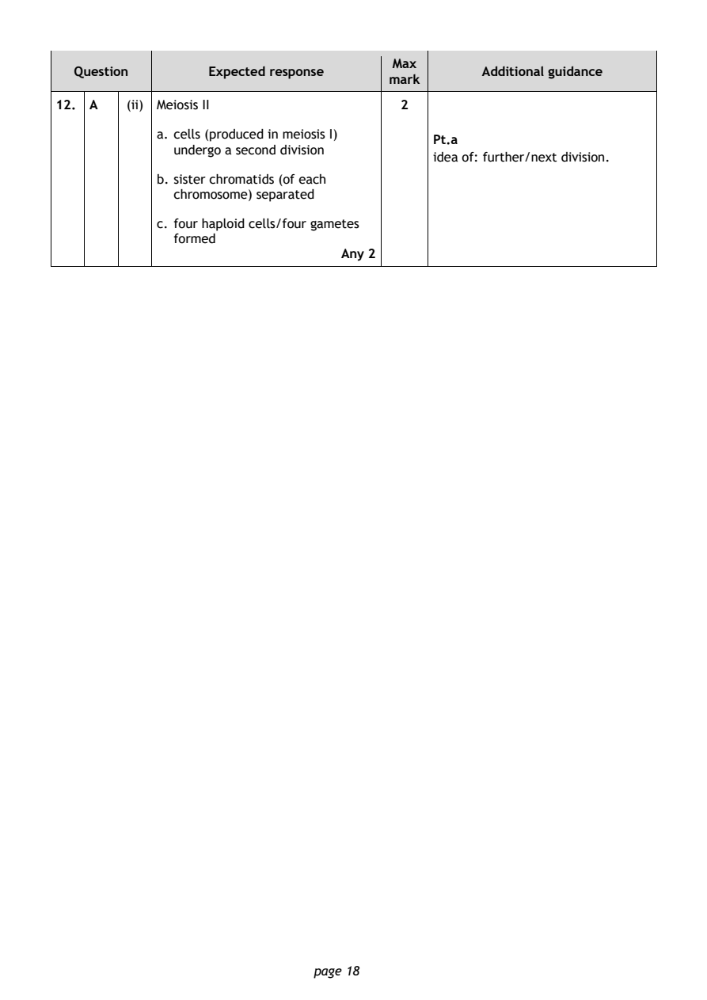
Selectable page text
Max
Question Expected response Additional guidance
mark
12. A (ii) Meiosis II 2
a. cells (produced in meiosis I)
Pt.a
undergo a second division
idea of: further/next division.
b. sister chromatids (of each
chromosome) separated
c. four haploid cells/four gametes
formed
Any 2
page 18PDF page 19
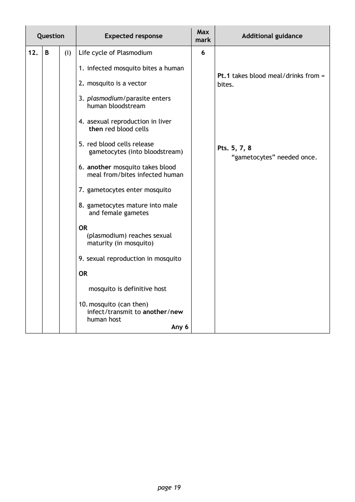
Selectable page text
Max
Question Expected response Additional guidance
mark
12. B (i) Life cycle of Plasmodium 6
1. infected mosquito bites a human
Pt.1 takes blood meal/drinks from =
2. mosquito is a vector bites.
3. plasmodium/parasite enters
human bloodstream
4. asexual reproduction in liver
then red blood cells
5. red blood cells release
Pts. 5, 7, 8
gametocytes (into bloodstream)
“gametocytes” needed once.
6. another mosquito takes blood
meal from/bites infected human
7. gametocytes enter mosquito
8. gametocytes mature into male
and female gametes
OR
(plasmodium) reaches sexual
maturity (in mosquito)
9. sexual reproduction in mosquito
OR
mosquito is definitive host
10. mosquito (can then)
infect/transmit to another/new
human host
Any 6
page 19PDF page 20
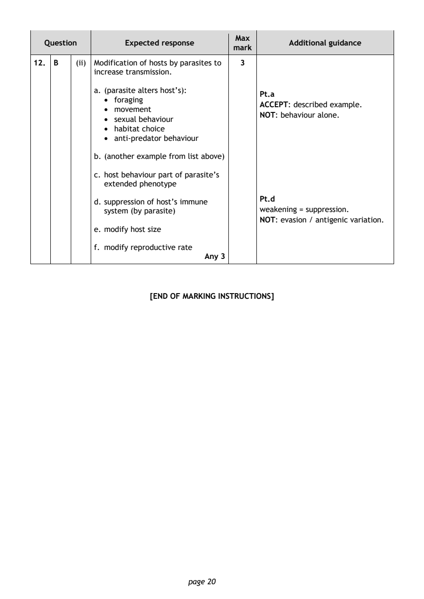
Selectable page text
Max
Question Expected response Additional guidance
mark
12. B (ii) Modification of hosts by parasites to 3
increase transmission.
a. (parasite alters host’s):
Pt.a
• foraging
ACCEPT: described example.
• movement
NOT: behaviour alone.
• sexual behaviour
• habitat choice
• anti-predator behaviour
b. (another example from list above)
c. host behaviour part of parasite’s
extended phenotype
Pt.d
d. suppression of host’s immune
system (by parasite) weakening = suppression.
NOT: evasion / antigenic variation.
e. modify host size
f. modify reproductive rate
Any 3
[END OF MARKING INSTRUCTIONS]
page 20